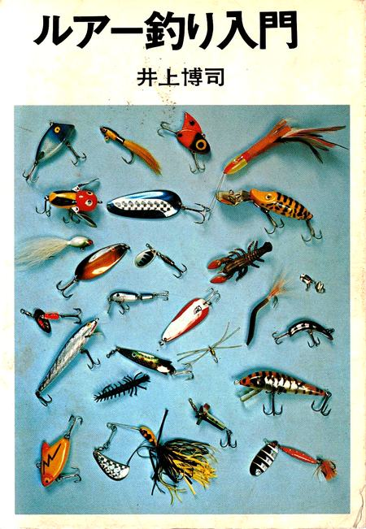
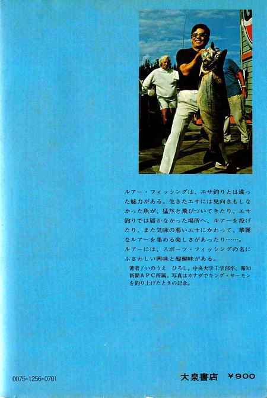
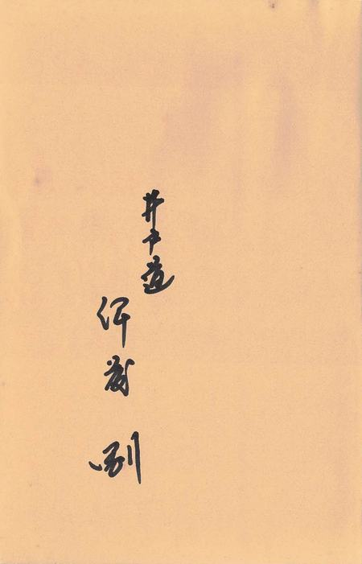

エッセイ
夜更けに、３３年前に亡くなった祖父と出会う
最近は、歳のせいか、無性に昔の本を読み返したくなる。図書館で探したり、昔買って、手放したりなくした本をまたアマゾンで買ったりもする。
そんな中の１冊が、僕がルアーの渓流釣りを始めた、16歳頃熱心に読んだ「バイブル」だった、 井上博司著 ルアー釣り入門 である。


この本を、安い帆布製ショルダーバッグに入れて、父が買ってくれたダイワのルアーロッドとスピニングリールと共に地元の川を釣り歩いたものであった。
あの頃、僕が、未熟ながらも固く守っていた信条は、
「上達するまでは、けっして餌釣りに戻らないこと！」
「隣家の一番鶏を起こして釣りに行け！」
というものだった。休日で農作業の無い日には、遅くとも朝４時には起き出し、釣り道具を持って２階の部屋から降りて、土間の上がりかまちに腰掛けてゴム長をゴソゴソと履いていると、老いて物音で目を覚ましやすくなっていた祖父が、用足しに板の間に降りてきて、
「今日も行くだか？」
と、なかば呆れたような、秘やかな声を僕の背中にかけてくれた。
立て付けの悪い板戸をガタガタと音のしないよう静かに開けて、５月の夜明け前の闇へと歩み出すと、隣家の雄鶏が
「コォケコッコォ～～～～！」
と長く尾を引いて鳴き出すのが常であった。
一昨日の晩に、この間アマゾンで買ったこの本を何十年ぶりにパラパラとめくっていた。さすがに時代を感じさせる記述がそこここに見られるが、内容は現在売られている本よりはずっと広く、深くて濃い。
最近のルアーの入門書や雑誌、メーカーのウェブサイトのように、アジ釣りにはこのロッド、メバルにはこのロッド、エギング（笑）にはこのロッド、自然渓流と管理釣り場ではロッドを使い分ける.....などという押しつけがましい商魂だけの記述は一切無い。
あぁぁ、懐かしいなぁというルアーがたくさんカラー写真で載っている。
当時の僕が書き込んだ実績、ヒットルアーの記録もあった。
・アマゴ、パンサー 3g、銀
・ 〃 、コメット 2.5g、銀＋青
・ 〃 、パンサー 3g、銀
・ 〃 、コメット 2.5g、銀＋青
・ニジマス、コメット 〃 〃
・ 〃 、 〃 2.15g、金＋青
・ 〃 、アグリア 2.5g、黒
・アマゴ、 〃 〃、〃
・ 〃 28cm、アグリア 2.5g、黒
・ナマズ 37.5cm、ブラックフューリー 2.5g、銀地に赤点
・アマゴ、アグリア 3g、レッドフロー
最後までめくっていくと、裏の見返しに何やらマジックで文字が書いてある。

『あれっ！ この本はアマゾンで買ったのじゃなかったのか！』
祖父が夜更けに甦ってきたような気がして一瞬ギョッとしたが、しだいに嬉しさとありがたさが身に染みてきた。祖父が本を無くさないように僕の名前を書いておいてくれたのだ。
アマゾンで買い直したと思い込んでいたこの本は、実家にしまってあったのを今のアパートに持ち帰っていたのだ。僕もいささかボケが始まっているのかもしれない。
祖父は明治36年生まれで、田舎の豪農だった生家が、曾祖父が小豆の先物取引か何か、商売に失敗したおかげで若い頃から苦労した。商業高校に進学し、寮生活で揉まれたので、自分の持ち物には全部名前を書き込むことを身に付けたそうだ。
祖父曰わく、名前を書いておかないと、紛失したり忘れ物をしてから誰かが見つけた時に、これは自分の持ち物だと主張できない。証拠がない。だから他人に持って行かれてしまう！ という教えだった。
僕が17歳の頃、初めて買ったアウトドア用品である、アルミ製コッフェルの裏蓋、本体底にも、寮に持って行ったセイコーの置時計の上面にも、祖父が僕の名前を千枚通しの古いやつで彫ってくれた。コッフェルも置時計も、今でも現役で活躍していて、祖父の字がはっきりと読める。当時から愛読していた開高健の「白いページ」の文庫本にも祖父が名前を書いてくれていた。
僕もその教えを守り、ハーディのフェザーウェイトや、バンブーロッドの竿尻にあった銅製パーツにもに名前を彫ったりした。
考えてみれば、今僕は、僕が幼かった頃、父と祖父と３人で釣りをした時の、祖父の年齢とそんなに違わないところまで来ているのだ。
冬の日、深い谷底の大淵を臨む岩棚の上。遅く射してはすぐに翳ってしまう陽光を惜しみながら、寒バヤを狙って小さな鉤にサシ餌を付け、水面の小さな赤い浮子が沈むのを待ち焦がれ、穏やかな笑顔を浮かべながら見つめていた祖父の小柄な姿が目に浮かんだ。
僕が釣り竿を置く日は、そう遠くないのかもしれない。
エッセイ 目次へ
サイトマップ
ホームへ
お問い合わせ